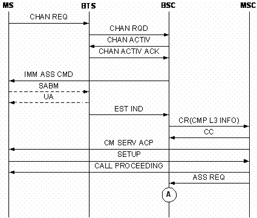

Measurement Counters
| ID | Counter | Description |
|---|---|---|
| 1278075496 | CELL.TCHF.SUCC.TIMES.SPEECH | A301F:TCHF Seizures for Speech Service |
| 1278075497 | CELL.TCHH.SUCC.TIMES.SPEECH | A301HH:TCHH Seizures for Speech Service |
Description
In the immediate assignment procedure, an MS reports a FIRST SABM frame to the BTS on the seized signaling channel (SDCCH, TCHF, or TCHH). Through this frame, the MS notifies the BTS that the radio link layer has entered the multiframe link setup state. The BTS returns a UA frame to the MS and sends the BSC an EST IND message to notify the BSC that the link is established on the Um interface.
If the channel type is TCHH or TCHF, these counters are measured respectively.
Measurement point
Each time the BSC receives an EST IND message from the BTS, one of the two counters is incremented by one according to the channel type and the L3 message type carried in the EST IND message if the MS access reason is MOC Non SMS, Emergency Call, or Call Reestablishment. This counter is measured at point C in Figure 1. Each time the BSC receives an assignment request message from the MSC, one of the two counters is incremented by one according to the channel type if the access reason is paging response or supplementary service. This counter is measured at point A in Figure 2.


Formula
None
Unit
None
Related Features
| Counter | Feature ID | Feature Name |
|---|---|---|
| CELL.TCHF.SUCC.TIMES.SPEECH |
GBFD-110502 |
Assignment and Immediate Assignment |
| CELL.TCHH.SUCC.TIMES.SPEECH |
GBFD-113401 |
Half Rate Speech |